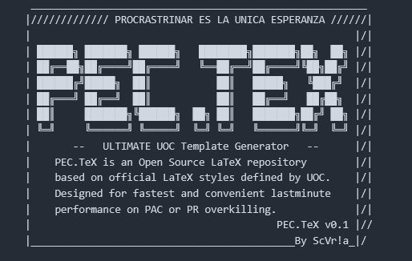

Agentic engineering, without the religious fog
Planned article: how I use agents as engineering instruments while keeping source files, tests, reviews, and personal judgment in control.
INDEX / NOTES
Writing queue for source-backed notes and project logs.
03 / NOTES
 Project logsDelivery loops, review gates, and decisions from AgenticCareerBoost.
Project logsDelivery loops, review gates, and decisions from AgenticCareerBoost.

Tooling notesLaTeX build tooling and document production. Technical decisionsShort notes tied to public project pages and source files.
Technical decisionsShort notes tied to public project pages and source files.
03B / BLOG
Planned article: how I use agents as engineering instruments while keeping source files, tests, reviews, and personal judgment in control.
Planned article: why this site is a small OS surface instead of a recruiter funnel or a generic portfolio stack.
Future LinkedIn posts can be mirrored here by adding one entry to notes-index.json and linking the public post.